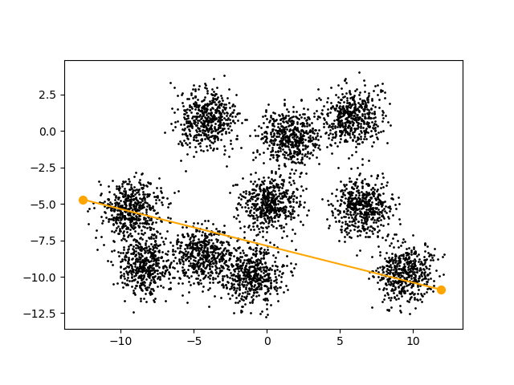
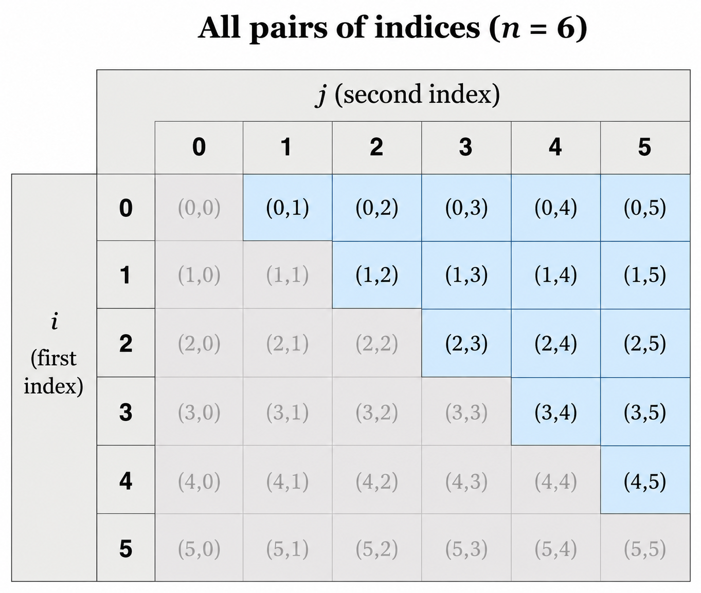
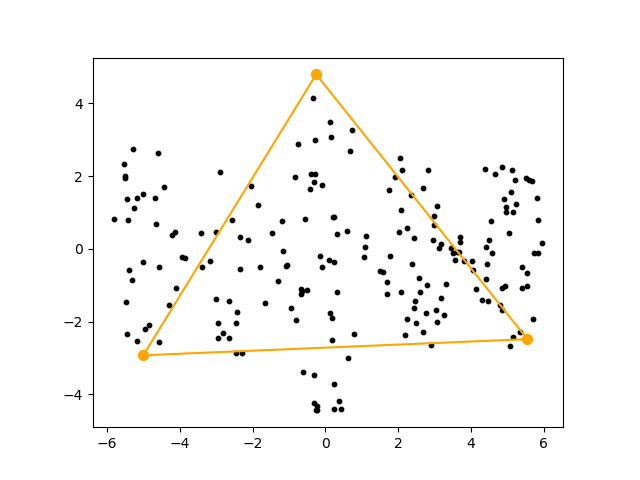
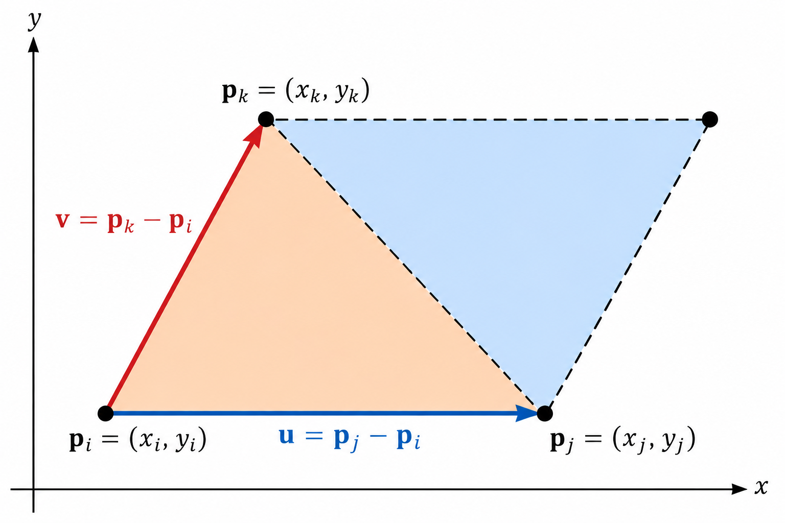
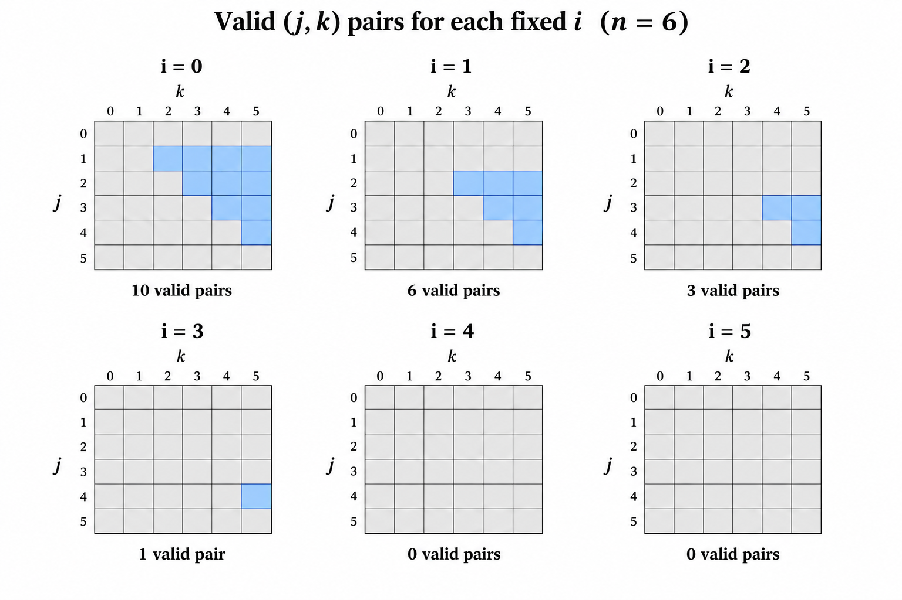

Extreme Computation
In this section we consider two simple geometric problems involving a set of points in \(\mathbb{R}^2\). The first problem asks us to find an extreme pair of points, while the second asks us to find an extreme triangle.
These problems give us an opportunity to study an important computational question: how do we efficiently iterate over all possible pairs or triples of objects?
The Extreme Pair Problem
Given a dataset
\[ \{ \mathbf{p}_0, \mathbf{p}_1, \ldots, \mathbf{p}_{n-1} \} \]
in \(\mathbb{R}^2\), the extreme pair problem asks us to find a pair of indices \(e_1,e_2\) such that for any \(i,j\) in \(\{0,\ldots,n-1\}\) we have
\[ \| \mathbf{p}_{e_1}-\mathbf{p}_{e_2} \| \geq \| \mathbf{p}_i-\mathbf{p}_j \| \]
In other words, we want to find the two points in the dataset that are farthest apart.
Figure Figure 1 shows the extreme pair for the dataset points5k.txt.

points5k.txt dataset.
Here is our first attempt at solving the extreme pair problem in Python.
import sys
import math
import time
x = []
y = []
f = open(sys.argv[1],"r")
for line in f:
x_next, y_next = line.split()
x.append(float(x_next))
y.append(float(y_next))
f.close()
start = time.perf_counter()
extreme_pair = (-1,-1)
extreme_dist_sq = 0
n = len(x)
for i in range(n):
for j in range(n):
dx = x[i]-x[j]
dy = y[i]-y[j]
dist_sq = dx*dx+dy*dy
if (dist_sq > extreme_dist_sq):
extreme_dist_sq = dist_sq
extreme_pair = (i,j)
elapsed = time.perf_counter() - start
print (f"elapsed time = {elapsed:.3f} seconds")
print (f"extreme_dist = {math.sqrt(extreme_dist_sq):.3f}")
print ("extreme_pair =",*extreme_pair)The key computation in extreme_pair_v1.py is
for i in range(n):
for j in range(n):
dx = x[i]-x[j]
dy = y[i]-y[j]
dist_sq = dx*dx+dy*dy
if (dist_sq > extreme_dist_sq):
extreme_dist_sq = dist_sq
extreme_pair = (i,j)For every pair of indices \((i,j)\), we calculate the squared distance between \(\mathbf{p}_i\) and \(\mathbf{p}_j\). If this distance is larger than the largest squared distance found so far, we update both extreme_dist_sq and extreme_pair.
Notice that we compare squared distances rather than distances. Since the square root function is increasing, the pair with the largest squared distance is also the pair with the largest distance. Thus, we do not need to calculate a square root for every pair. We calculate the square root only once when printing the final result.
print (f"extreme_dist = {math.sqrt(extreme_dist_sq):.3f}")Since both loops iterate n times, the first implementation checks \(n^2\) pairs.
Since this is the key computation, we use the time module to measure how long this computation takes. The function
time.perf_counter()returns the current value of a high-resolution performance counter. We call time.perf_counter() immediately before starting the computation
start = time.perf_counter()and again immediately after the computation finishes:
elapsed = time.perf_counter() - startThe difference between these two values is the elapsed time, in seconds, for the part of the program that we want to measure.
Notice that we start the timer after reading the input file and stop the timer before printing the results. We want to measure the runtime of the extreme-pair computation itself rather than include the time required for file input or output.
Eliminating Redundant Pairs
The first version of extreme_pair is correct, but it performs unnecessary work. To understand why, we make two observations.
- For any \(i\) in \(\{0,\ldots,n-1\}\) we have
\[ \| \mathbf{p}_i-\mathbf{p}_i \|=0 \]
For a dataset containing more than one distinct point, the extreme pair will have different indices.
- For any \(i,j\) in \(\{0,\ldots,n-1\}\) we have
\[ \| \mathbf{p}_i-\mathbf{p}_j \| = \| \mathbf{p}_j-\mathbf{p}_i \| \]
Thus, it suffices to check only one of the two symmetric pairs.
We can eliminate both of these inefficiencies by considering only pairs \((i,j)\) such that
\[ i<j \]
Figure Figure 2 shows the subset of pairs \((i,j)\) satisfying \(i<j\) when \(n=6\).

For \(n\) given points, the total number of pairs \((i,j)\) satisfying \(i<j\) is
\[ \binom{n}{2} = \frac{n(n-1)}{2} \]
This is the number of ways to choose two elements from a set of \(n\) elements when order does not matter.
For example, when \(n=6\),
\[ n^2=36 \]
while
\[ \binom{6}{2} = \frac{6!}{(6-2)!2!} = \frac{6(5)}{2} = 15 \]
Figure Figure 2 suggests the following code for iterating over all pairs \((i,j)\) satisfying \(i<j\).
for i in range(n-1):
for j in range(i+1,n):We stop the i loop one iteration early since if i = n-1, there are no pairs \((i,j)\) satisfying \(i<j\).
For a fixed value of i, the smallest possible value of j is i+1. Thus, the inner loop begins at i+1 instead of 0.
The script extreme_pair_v2.py uses these more efficient loops.
import sys
import math
import time
x = []
y = []
f = open(sys.argv[1],"r")
for line in f:
x_next, y_next = line.split()
x.append(float(x_next))
y.append(float(y_next))
f.close()
start = time.perf_counter()
extreme_pair = (-1,-1)
extreme_dist_sq = 0
n = len(x)
for i in range(n-1):
for j in range(i+1,n):
dx = x[i]-x[j]
dy = y[i]-y[j]
dist_sq = dx*dx+dy*dy
if (dist_sq > extreme_dist_sq):
extreme_dist_sq = dist_sq
extreme_pair = (i,j)
elapsed = time.perf_counter() - start
print (f"elapsed time = {elapsed:.3f} seconds")
print (f"extreme_dist = {math.sqrt(extreme_dist_sq):.3f}")
print ("extreme_pair =",*extreme_pair)Extreme Pair Performance
We next compare the performance of the two Python scripts on the dataset points5k.txt, which contains \(5000\) points in \(\mathbb{R}^2\).
The first version checks
\[ 5000^2 = 25,000,000 \]
pairs, while the second version checks only
\[ \binom{5000}{2} = \frac{5000(4999)}{2} = 12,497,500 \]
pairs.
Since checking each pair requires around the same amount of work, we expect the second script to be around twice as fast. More precisely,
\[ \text{expected speedup} = \frac{\text{number of pairs checked by version 1}} {\text{number of pairs checked by version 2}} = \frac{5000^2}{\binom{5000}{2}} \approx 2 \]
Running both programs gives:
$ python3 extreme_pair_v1.py points5k.txt
elapsed time = 7.048 seconds
extreme_dist = 25.306
extreme_pair = 737 3260
$ python3 extreme_pair_v2.py points5k.txt
elapsed time = 3.472 seconds
extreme_dist = 25.306
extreme_pair = 737 3260Both programs find the same extreme pair and extreme distance, but the second version is much faster.
The actual speedup is
\[ \text{actual speedup} = \frac{\text{time slow}}{\text{time fast}} = \frac{7.048}{3.472} = 2.03 \]
Thus, the second implementation is around twice as fast, just as we predicted by comparing the amount of work performed by the two programs.
This example illustrates an important idea that we will use throughout this book:
Before trying to make individual operations faster, first look for operations that do not need to be performed at all.
Visualizing the Extreme Pair
In our third version, we modify the script to optionally create a visualization of the extreme pair.
import sys
import math
import time
import matplotlib.pyplot as plt
x = []
y = []
f = open(sys.argv[1],"r")
for line in f:
x_next, y_next = line.split()
x.append(float(x_next))
y.append(float(y_next))
f.close()
start = time.perf_counter()
extreme_pair = (-1,-1)
extreme_dist_sq = 0
n = len(x)
for i in range(n-1):
for j in range(i+1,n):
dx = x[i]-x[j]
dy = y[i]-y[j]
dist_sq = dx*dx+dy*dy
if (dist_sq > extreme_dist_sq):
extreme_dist_sq = dist_sq
extreme_pair = (i,j)
elapsed = time.perf_counter() - start
print (f"elapsed time = {elapsed:.3f} seconds")
print (f"extreme_dist = {math.sqrt(extreme_dist_sq):.3f}")
print ("extreme_pair =",*extreme_pair)
if (len(sys.argv) > 2):
plt.gca().set_aspect('equal')
plt.scatter(x,y,s=1,color="black")
i,j = extreme_pair
plt.scatter([x[i],x[j]],[y[i],y[j]],s=50,color="orange")
plt.plot([x[i],x[j]],[y[i],y[j]],color="orange")
plt.savefig(sys.argv[2])The condition
if (len(sys.argv) > 2):checks whether the user supplied a second command-line argument in addition to the input filename.
Our new script uses that optional filename for the image created by
plt.savefig(sys.argv[2])This gives us a convenient way to make visualization optional. The statement
i,j = extreme_pairunpacks the two indices stored in the tuple extreme_pair. We then use these indices to access and plot the two extreme points using large dots with a distinctive color.
plt.scatter([x[i],x[j]],[y[i],y[j]],s=50,color="orange")The line
plt.plot([x[i],x[j]],[y[i],y[j]],color="orange")draws an edge connecting the extreme points.
Figure 1 above shows the resulting visualization.
The Extreme Triangle Problem
We next extend the extreme pair problem from pairs of points to triples of points.
Given a dataset
\[ \{ \mathbf{p}_0, \mathbf{p}_1, \ldots, \mathbf{p}_{n-1} \} \]
in \(\mathbb{R}^2\), the extreme triangle problem asks us to find three indices \(e_1,e_2,e_3\) such that the triangle with vertices \(\mathbf{p}_{e_1}\), \(\mathbf{p}_{e_2}\), and \(\mathbf{p}_{e_3}\) has maximum area.
Figure Figure 3 shows the extreme triangle for the dataset cities200.txt.

cities200.txt dataset.
Calculating the Area of a Triangle
We next review a way to calculate the area of a triangle from the coordinates of its three vertices.
Given three points
\[ \mathbf{p}_i=(x_i,y_i), \qquad \mathbf{p}_j=(x_j,y_j), \qquad \mathbf{p}_k=(x_k,y_k) \]
we form the two vectors
\[ \mathbf{u}=\mathbf{p}_j-\mathbf{p}_i \qquad \text{and} \qquad \mathbf{v}=\mathbf{p}_k-\mathbf{p}_i \]
Figure Figure 4 illustrates the triangle formed by these vectors and the corresponding parallelogram.

We form a \(2\times2\) matrix whose columns are the vectors \(\mathbf{u}\) and \(\mathbf{v}\). The determinant of this matrix gives the signed area of the parallelogram formed by the two vectors. The sign depends on the orientation of the vectors, while the absolute value gives the area of the parallelogram.
The triangle with vertices \(\mathbf{p}_i\), \(\mathbf{p}_j\), and \(\mathbf{p}_k\) has half the area of this parallelogram. Therefore,
\[ A = \frac{1}{2} \text{abs} \left ( \begin{vmatrix} x_j-x_i & x_k-x_i \\ y_j-y_i & y_k-y_i \end{vmatrix} \right ) \]
Expanding the determinant gives
\[ A = \frac{1}{2} \left| (x_j-x_i)(y_k-y_i) - (y_j-y_i)(x_k-x_i) \right| \]
Our first version finds the extreme triangle using ideas from the extreme pair code as well as the area calculation given above.
import sys
import math
import time
x = []
y = []
f = open(sys.argv[1],"r")
for line in f:
x_next, y_next = line.split()
x.append(float(x_next))
y.append(float(y_next))
f.close()
start = time.perf_counter()
extreme_tri = (-1,-1,-1)
extreme_area2 = 0
n = len(x)
for i in range(n):
for j in range(n):
for k in range(n):
area2 = abs((x[j]-x[i])*(y[k]-y[i]) - (y[j]-y[i])*(x[k]-x[i]))
if area2 > extreme_area2:
extreme_area2 = area2
extreme_tri = (i,j,k)
elapsed = time.perf_counter() - start
print (f"elapsed time = {elapsed:.3f}")
print (f"extreme_area = {extreme_area2/2:.3f}")
print ("extreme_tri =",*extreme_tri)The overall structure of extreme_tri_v1.py is very similar to the extreme pair program. Instead of storing a pair of indices, we store a triple of indices.
extreme_tri = (-1,-1,-1)Likewise, instead of keeping track of the largest squared distance, we keep track of twice the largest triangle area.
extreme_area2 = 0The program uses three nested loops to iterate over triples of indices \((i,j,k)\).
for i in range(n):
for j in range(n):
for k in range(n):For each triple, we use the determinant formula developed above to calculate twice the area of the corresponding triangle.
area2 = abs((x[j]-x[i])*(y[k]-y[i])
- (y[j]-y[i])*(x[k]-x[i]))If area2 is larger than the largest value found so far, we update both the area and the corresponding triple of indices.
if area2 > extreme_area2:
extreme_area2 = area2
extreme_tri = (i,j,k)After the extreme triangle has been found do we divide by \(2\) to report its actual area.
print (f"extreme_area = {extreme_area2/2:.3f}")Since each of the three loops iterates n times, this first implementation checks
\[ n^3 \]
triples.
Eliminating Redundant Triples
Just as in the extreme pair problem, the first implementation is correct, but it performs a large amount of unnecessary work.
The same three points can be selected in several different orders. For example, there are six ways to order the indices in the triple \((1,2,3)\):
\[ (1,2,3),\; (1,3,2),\; (2,1,3),\; (2,3,1),\; (3,1,2),\; (3,2,1) \]
Each of these ordered triples selects exactly the same three points and therefore represents the same triangle.
In addition, many of the \(n^3\) triples contain repeated indices. For example,
\[ (2,2,5) \]
uses the same point twice and therefore forms a triangle with area \(0\).
As with the extreme pair problem, we can avoid this unnecessary work by generating each choice of distinct points exactly once. We do this by requiring
\[ i<j<k \]
Figure Figure 5 shows the possible values of \(j\) and \(k\) for each fixed value of \(i\) when \(n=6\). The blue cells correspond to triples satisfying \(i<j<k\).

Notice that the tables for \(i=4\) and \(i=5\) contain no valid pairs \((j,k)\). If \(i=4\), there is only one larger index remaining, but we need two larger indices \(j\) and \(k\). Thus, the outer i loop stops at n-2 instead of n.
For a fixed value of i, the smallest possible value of j is i+1. The j loop also stops at n-1 since we must leave at least one larger index for k.
Finally, for fixed values of i and j, the smallest possible value of k is j+1.
These observations give the following nested loops:
for i in range(n-2):
for j in range(i+1,n-1):
for k in range(j+1,n):The number of triples satisfying \(i<j<k\) is
\[ \binom{n}{3} = \frac{n!}{(n-3)!3!} = \frac{n(n-1)(n-2)}{6} \]
This is the number of ways to choose three elements from a set of \(n\) elements when order does not matter.
For example, when \(n=6\), the first implementation checks
\[ 6^3=216 \]
ordered triples, while the improved loops check only
\[ \binom{6}{3}=20 \]
triples.
The second version of our script uses the more efficient loops.
import sys
import math
import time
x = []
y = []
f = open(sys.argv[1],"r")
for line in f:
x_next, y_next = line.split()
x.append(float(x_next))
y.append(float(y_next))
f.close()
start = time.perf_counter()
extreme_tri = (-1,-1,-1)
extreme_area2 = 0
n = len(x)
for i in range(n-2):
for j in range(i+1,n-1):
for k in range(j+1,n):
area2 = abs((x[j]-x[i])*(y[k]-y[i]) - (y[j]-y[i])*(x[k]-x[i]))
if area2 > extreme_area2:
extreme_area2 = area2
extreme_tri = (i,j,k)
elapsed = time.perf_counter() - start
print (f"elapsed time = {elapsed:.3f}")
print (f"extreme_area = {extreme_area2/2:.3f}")
print ("extreme_tri =",*extreme_tri)Extreme Triangle Performance
We next compare the performance of the two extreme triangle scripts on the dataset cities200.txt, which contains \(200\) points in \(\mathbb{R}^2\).
The first version checks
\[ 200^3 = 8,000,000 \]
triples, while the second version checks only
\[ \binom{200}{3} = \frac{200(199)(198)}{6} = 1,313,400 \]
triples.
Since checking each triple requires around the same amount of work, we can predict the speedup by comparing the number of triples checked by the two versions.
\[ \text{expected speedup} = \frac{\text{number of triples checked by version 1}} {\text{number of triples checked by version 2}} = \frac{200^3}{\binom{200}{3}} \approx 6.09 \]
Running both programs gives:
$ python3 extreme_tri_v1.py cities200.txt
elapsed time = 3.290
extreme_area = 39.716
extreme_tri = 115 45 178
$ python3 extreme_tri_v2.py cities200.txt
elapsed time = 0.535
extreme_area = 39.716
extreme_tri = 45 115 178Both programs find the same extreme triangle and extreme area, but the second version is much faster.
Notice that the two programs report the indices of the extreme triangle in a different order. Both programs found the same triangle. However, the first program considers this triangle six times, once for each ordering of its three vertices. Due to floating-point roundoff errors, the computed area of a triangle can depend slightly on not just the three vertices, but also the order in which they appear in the formula. Avoiding this issue is another advantage of considering each triangle only once. In particular, requiring \(i<j<k\) gives every triangle a unique representation.
The actual speedup in this case is
\[ \text{actual speedup} = \frac{\text{time slow}}{\text{time fast}} = \frac{3.290}{0.535} \approx 6.15 \]
Thus, the second implementation is around six times faster, which is very close to the speedup that we predicted by comparing the amount of work performed by the two programs.
The improvement is much larger than the factor of approximately \(2\) that we observed for the extreme pair problem. For large \(n\),
\[ \binom{n}{3} = \frac{n(n-1)(n-2)}{6} \approx \frac{n^3}{6} \]
so
\[ \frac{n^3}{\binom{n}{3}} \approx 6 \]
This means that iterating over only the necessary triples gives us a speedup that approaches a factor of \(6\) as \(n\) becomes large.
More generally,
\[ \binom{n}{k} \approx \frac{n^k}{k!} \]
for large \(n\). Therefore,
\[ \frac{n^k}{\binom{n}{k}} \approx k! \]
For pairs this factor approaches \(2\), for triples it approaches \(6\), and for groups of four it approaches \(24\).
As the number of objects that we choose increases, avoiding redundant orderings becomes increasingly important.
We will use these more efficient loop orderings later in the notes while designing scripts to solve the \(k\)-center problem.
Visualizing the Extreme Triangle
In our third version, we modify the script to optionally create a visualization of the extreme triangle.
import sys
import math
import time
import matplotlib.pyplot as plt
x = []
y = []
f = open(sys.argv[1],"r")
for line in f:
x_next, y_next = line.split()
x.append(float(x_next))
y.append(float(y_next))
f.close()
start = time.perf_counter()
extreme_tri = (-1,-1,-1)
extreme_area2 = 0
n = len(x)
for i in range(n-2):
for j in range(i+1,n-1):
for k in range(j+1,n):
area2 = abs((x[j]-x[i])*(y[k]-y[i]) - (y[j]-y[i])*(x[k]-x[i]))
if area2 > extreme_area2:
extreme_area2 = area2
extreme_tri = (i,j,k)
elapsed = time.perf_counter() - start
print (f"elapsed time = {elapsed:.3f}")
print (f"extreme_area = {extreme_area2/2:.3f}")
print ("extreme_tri =",*extreme_tri)
if (len(sys.argv) > 2):
plt.gca().set_aspect('equal')
plt.scatter(x,y,s=10,color="black")
i,j,k = extreme_tri
plt.scatter([x[i],x[j],x[k]],[y[i],y[j],y[k]],s=50,color="orange")
plt.plot([x[i],x[j],x[k],x[i]],[y[i],y[j],y[k],y[i]],color="orange")
plt.savefig(sys.argv[2])The visualization code follows the same pattern that we used for the extreme pair. If a second command-line argument is provided, the script uses it as the filename for the resulting image.
After computing the extreme triangle, we unpack its three vertex indices.
i,j,k = extreme_triWe then use these indices to highlight the three vertices of the extreme triangle.
plt.scatter([x[i],x[j],x[k]],[y[i],y[j],y[k]],s=50,color="orange")To draw the triangle, we connect its three vertices using plt.plot.
plt.plot([x[i],x[j],x[k],x[i]],[y[i],y[j],y[k],y[i]],color="orange")Notice that the first vertex (x[i],y[i]) appears twice in the call to plt.plot. The first three points draw edges from vertex i to vertex j and from vertex j to vertex k. Repeating vertex i at the end draws the final edge from vertex k back to vertex i, closing the triangle.
Finally,
plt.savefig(sys.argv[2])saves the visualization using the optional output filename.
Figure 3 above shows the resulting visualization.